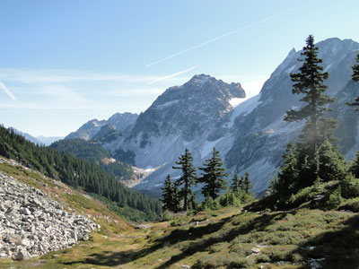
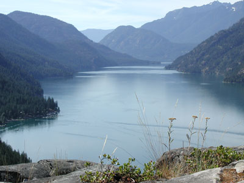
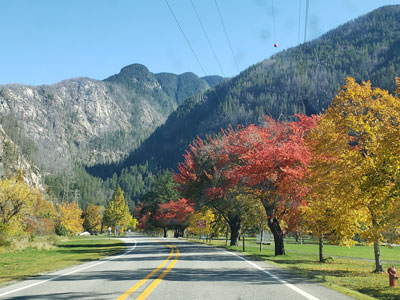
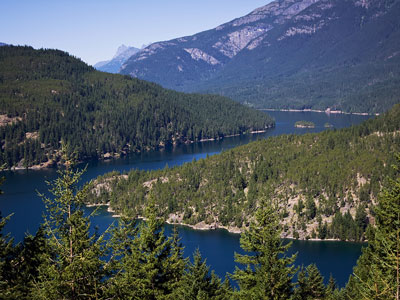
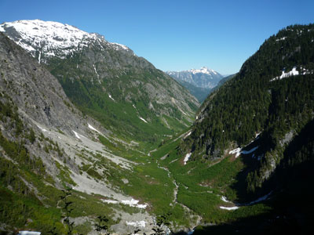
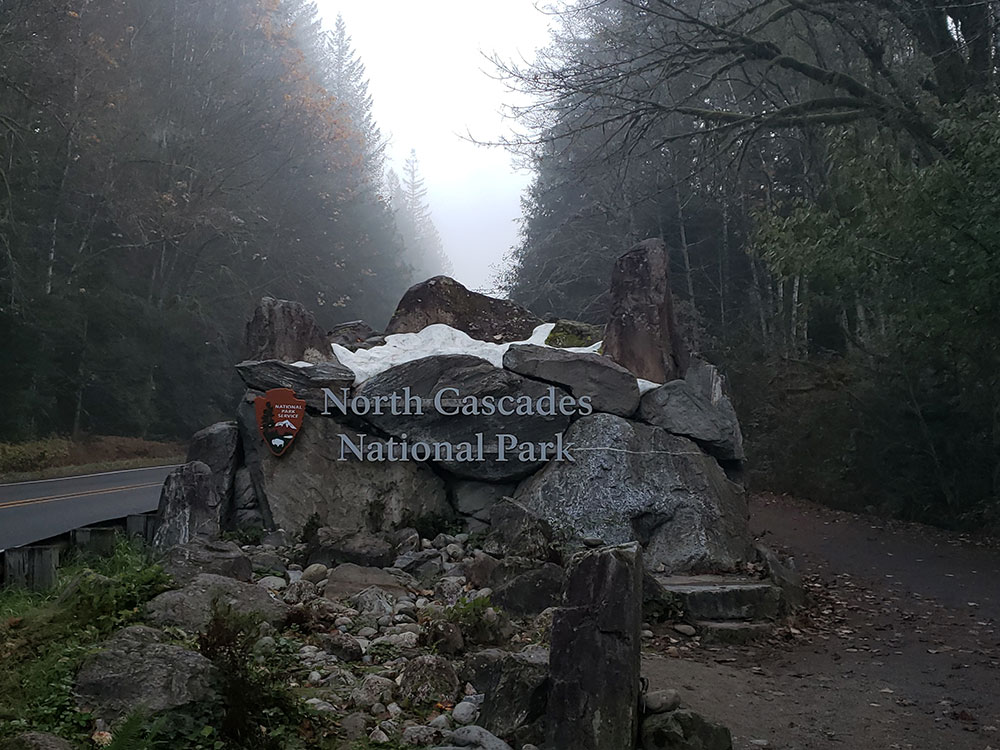

.jpg){kind=link}
North Cascades National Park Travel Guide
Park features the rugged mountain peaks of the North Cascades Range, the most expansive glacial system in the contiguous United States, the headwaters of numerous waterways, and vast forests with the highest degree of flora biodiversity of any American national park
General Information
North Cascades Visitor Center - Newhalem
Open daily 9am to 4:30pm. Closed Tuesdays and Wednesdays.
Park and Forest Information Center Sedro-Woolley
Wilderness Information Center - Marblemount
Open 7am to 4pm daily through October 11, 2021
Golden West Visitor Center - Stehekin
Closed for the 2021 summer season. During the summer season, rangers are available at Stehekin Landing for information during boat times.
Glacier Public Service Center (U.S. Forest Service) - Glacier
Closed until further notice.
Methow Valley Ranger District (U.S. Forest Service) - Winthrop
Monday to Friday, 7:45am to 4:30pm. Closed federal holidays. Summer (late June-Sept.): may also be open on weekends and holidays
Skagit Information Center - Newhalem
Open daily 9am to 5pm
Skagit Tours - Diablo Lake Boat Tours
July 1 to Sept 6: Tours offered twice daily, Thursday through Monday, at 11:30am and 2:30pm. Tours are approximately 1.25 hours
Sept 11 to 26: Tours offered twice daily on Saturdays and Sundays only, at 11:30am and 2:30pm. Tours are approximately 1.25 hours
There is no fee to enter North Cascades National Park
Skagit Tours - Diablo Lake Boat Tours
- ADULT (AGE 13-61): $45.00
- SENIOR (AGE 62+): $42.00
- YOUTH (3-12): $22.00
- INFANT (0-2): free
Pets are allowed within the Ross Lake and Lake Chelan National Recreation Areas. Pets are also allowed on most surrounding national forest lands.
How to Get There
Head west on WA-706 toward 387th Ave Ct E. Continue onto WA-7 N/Mountain Hwy E. Turn right onto Alder Cutoff Rd E. Continue onto Center St E. Turn right onto WA-161 N/Washington Ave N Pass by Meineke Car Care Center (on the right in 22.1 mi). Turn right onto S Meridian.
Overview
North Cascades National Park in northern Washington is a rugged wilderness of more than 500,000 acres, the largest of three units in the North Cascades National Park Service Complex, along with Ross Lake and Lake Chelan National Recreation Areas. It has more than 300 glaciers, more than any other U.S. national park outside Alaska, jagged peaks, deep valleys, waterfalls, and turquoise lakes, in a landscape sometimes called the "American Alps." Few roads reach the park, so much of it is a destination for backpackers and climbers, and it receives far fewer visitors than its neighbors.
The park was established in 1968 after a long struggle between conservationists and loggers. Most visitors experience it from the North Cascades Highway (Highway 20), which passes through Ross Lake National Recreation Area and offers views of Diablo Lake, Ross Lake, and the high peaks. People come for scenic drives, day hikes such as Cascade Pass, paddling on turquoise reservoirs, fall color and larches, and the remote community of Stehekin at the head of Lake Chelan.
Park Sections
The complex has three parts. The park itself is split into a North Unit, which is roadless backcountry, and a South Unit, which includes the Cascade River Road and the Cascade Pass trailhead near Marblemount. Between them, Highway 20 passes through Ross Lake National Recreation Area, with the towns of Newhalem and Diablo, the North Cascades Visitor Center, and Diablo Lake. To the south, Lake Chelan National Recreation Area includes the community of Stehekin, reached only by boat, floatplane, or foot.
Sightseeing and Exploring the Park
The North Cascades Highway is the main scenic drive, crossing the Cascades for about 130 miles between Sedro-Woolley and Winthrop. Viewpoints include the Gorge Creek Falls, Diablo Lake Overlook, with its bright turquoise water, Ross Dam, Rainy Pass, and Washington Pass Overlook, which has a view of Liberty Bell Mountain. The Cascade River Road leads to the Cascade Pass trailhead. The highway closes in winter between Ross Lake and Mazama, so check conditions. In Stehekin, the Lady of the Lake ferry from Chelan is a scenic trip in itself.
Hiking
The park has nearly 400 miles of trails. Easy walks include the Trail of the Cedars Nature Walk in Newhalem, the Happy Creek Forest Walk, and the Sterling Munro Trail, a short boardwalk to an overlook. Ladder Creek Falls is a short walk from the Gorge Powerhouse. The classic hike is Cascade Pass, a 7-mile round trip with 1,800 feet of gain to alpine views, and Thunder Creek Trail is a longer forested route. In Stehekin, Rainbow Falls is an easy walk. The Pacific Crest Trail crosses the South Unit, and the Pacific Northwest Trail passes through the North Unit.
Other Activities
Paddling on Diablo Lake and Ross Lake is popular, and Ross Lake Resort rents canoes and kayaks. A seasonal boat tour of Diablo Lake, run by Seattle City Light, includes a visit to the Gorge Powerhouse. Other activities include fishing, backpacking, mountaineering, camping, stargazing, ranger programs, and, in the Stehekin Valley, bicycling, horseback riding, and the Stehekin Pastry Company. Bald eagle watching on the Skagit River is popular in winter. The park has no cave tours.
Flora and Wildlife
The park spans an unusually wide range of habitats, from west-side rain forest of western hemlock, Douglas fir, and western redcedar to dry east-side ponderosa pine forests and alpine meadows with wildflowers in July and August. Subalpine larches turn gold in early October. Wildlife includes black bears, mountain goats, deer, cougars, wolverines, and, rarely, gray wolves and grizzly bears, as well as bald eagles, which gather along the Skagit River in winter to feed on spawning salmon. Viewing is on your own, and mountain goats are sometimes seen on high ridges.
Access
The park is reached by Highway 20 from Interstate 5 at Burlington or Sedro-Woolley, with Newhalem about 60 miles (1.25 hours) east. Seattle is about 2.5 to 3 hours (120 miles) from the park, and Vancouver, British Columbia, is about 2.5 hours. On the east side, Winthrop is about 1.5 hours from Newhalem in good weather. Seattle-Tacoma International Airport is the nearest major airport. Stehekin is reached by the Lady of the Lake ferry from Chelan (about 4 hours), by floatplane, or by hiking. There is no public transportation, and services are limited.
Seasons
Summer is the main season, from about July to September, when high trails are clear of snow and wildflowers bloom. Highway 20 usually closes between Ross Lake and Mazama from about November to April or May because of snow and avalanches, and the date of reopening varies. Fall brings larch color and fewer crowds, and winter limits access to the west side of the highway, where eagle watching and snowshoeing are available. Spring is wet, and many facilities, including the North Cascades Visitor Center, are seasonal.
Camping and Lodging
The complex has about 15 campgrounds, including Colonial Creek, Newhalem Creek, Goodell Creek, and Gorge Lake along Highway 20, and some take reservations. Backcountry camping requires a permit. Lodging includes Ross Lake Resort, with floating cabins, and Stehekin's North Cascades Lodge at Stehekin Landing, which are reached by boat or truck. Outside the park, Marblemount and Concrete have motels, and Winthrop, on the east side, has lodges such as Sun Mountain Lodge and the Freestone Inn. Burlington and Sedro-Woolley, about an hour west, have chain hotels.
Visitor Centers
The North Cascades Visitor Center in Newhalem is the main visitor center, with exhibits, a film, a bookstore, and trail information, and it is open seasonally. The Wilderness Information Center in Marblemount issues backcountry permits. In Stehekin, the Golden West Visitor Center at Stehekin Landing provides information and ranger programs, and the Methow Valley Visitor Center in Winthrop serves the east side. Hours vary by season, so check the National Park Service website.
Top Sights
- North Cascades Highway (SR 20): the main road through the complex, with Diablo Lake and Washington Pass
- Cascade Pass: the park's classic day hike
- Stehekin and Rainbow Falls: reached by ferry or floatplane
- Newhalem and the North Cascades Visitor Center
This article uses material from the Wikipedia article and official pages for North Cascades National Park, Cascade Pass, released under the Creative Commons Attribution-Share-Alike License 3.0. Additional information comes from the National Park Service North Cascades National Park website.
Featured Locations

Jeff P from Berkeley, CA, USA, CC BY 2.0, via Wikimedia Commons; Image Size Adjusted
Cascade Pass
5,392-foot (1,643 m) mountain pass over the northern Cascade Range, east of Marblemount, Washington, providing the easiest connection from the Cascade River to the head of Lake Chelan, it is now inside North Cascades National Park, and crossed by only a hiking trail

Jeff P from Berkeley, CA, USA, CC BY 2.0, via Wikimedia Commons; Image Size Adjusted
Diablo Lake
Brilliant turquoise reservoir surrounded by steep forested mountains, scenic overlooks, boating areas, hiking trails, and dramatic views of peaks shaped by glaciers.
Gorge Powerhouse
Historic hydroelectric facility featuring a public viewing gallery where visitors can observe massive turbines and learn about the engineering that powers communities throughout the Pacific Northwest.
Happy Creek Forest Walk
Accessible forest loop featuring towering old-growth trees, scenic boardwalks, cascading creek views, and a tranquil introduction to the ecosystems of the North Cascades.
Ladder Creek Falls Trail
Waterfalls and manicured gardens that have been delighting visitors to the Skagit Hydroelectric Project for over 75 years

Jeff P from Berkeley, CA, USA, CC BY 2.0, via Wikimedia Commons; Image Size Adjusted
Lake Chelan National Recreation Area
Remote mountain landscape featuring a glacially fed lake, historic communities, forested valleys, waterfalls, boating access, camping, hiking, fishing, and wildlife viewing opportunities.

Jeff P from Berkeley, CA, USA, CC BY 2.0, via Wikimedia Commons; Image Size Adjusted
Newhalem
Small company town owned by Seattle City Light surrounded by Ross Lake National Recreation Area and the North Cascades National Park

Jeff P from Berkeley, CA, USA, CC BY 2.0, via Wikimedia Commons; Image Size Adjusted
North Cascades Highway
30 mile section of Washington State Route 20 through North Cascades National Park providing access to old growth forests, cascading waterfalls, overlooks, hiking trails, and mountain scenery of North Cascades.The highway has been called "The Most Beautiful Mountain Highway in the State of Washington."
Rainbow Falls
Towering waterfall cascading from a hanging valley into a forested river corridor, featuring viewing areas, mist-filled scenery, and easy access to dramatic natural scenery.

Jeff P from Berkeley, CA, USA, CC BY 2.0, via Wikimedia Commons; Image Size Adjusted
Ross Lake National Recreation Area
Follows the Skagit River corridor from the Canada-US border to the western foothills of the Cascades with fishing, hunting, canoeing, kayaking, climbing and hiking opportunities

Jeff P from Berkeley, CA, USA, CC BY 2.0, via Wikimedia Commons; Image Size Adjusted
Stehekin
Location serves as a hub to explore the 61,949-acre Lake Chelan National Recreation Area and a gateway to the rest of the North Cascades National Park Service Complex, Stephen Mather Wilderness, and adjacent National Forest Wilderness Areas
Sterling Munro Trail
Accessible interpretive trail through old-growth forest featuring towering trees, native plants, and scenic views that introduce visitors to the natural beauty of the North Cascades.
Thunder Creek Trail
Scenic river valley trail following a glacially carved waterway through old-growth forests, mountain landscapes, and diverse ecosystems in the heart of the North Cascades.
Trail of the Cedars Nature Walk
Easy riverside nature trail winding through a grove of ancient western red cedars and Douglas-firs while showcasing the lush temperate rainforest ecosystem of the North Cascades.
Washington Pass
Scenic mountain viewpoint offering panoramic views of rugged granite peaks, alpine ridges, deep valleys, and one of the most dramatic landscapes along a high-elevation highway.
Winthrop
Western-themed mountain community featuring historic-style boardwalks, local shops, restaurants, art galleries, seasonal festivals, and abundant outdoor recreation opportunities.
